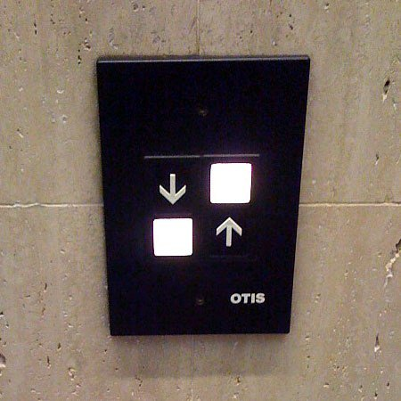
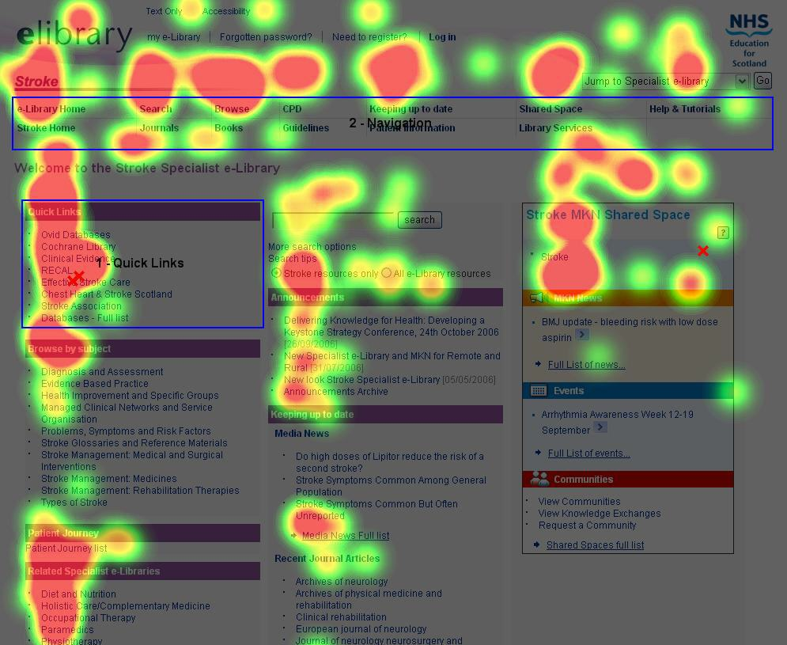

And not just the right thing; it’s profoundly the right thing to do, because the one argument for accessibility that doesn’t get made nearly often enough is how extraordinarily better it makes some people’s lives. How many opportunities do we have to dramatically improve people’s lives just by doing our job a little better?
—Steve Krug, Don't Make Me Think: A Common Sense Approach to Web Usability
Varia
Ik zocht eigenlijk een betere naam voor dit deel. ‘Varia’ klinkt nogal als ‘nog wat losse, niet zo belangrijke dingen’ en dat is nu net het laatste wat ik bedoel.
Je volgt een technische opleiding rond informatica. Toch kan het geen kwaad om eens heel kort naar de minder technische kant van dit verhaal te kijken. Het resultaat van je werk zal immers gebruikt worden door mensen. Wat kan ik als programmeur doen om mijn site of applicatie zo goed mogelijk bruikbaar en toegankelijk te maken?
- Bruikbaarheid (usability);
- toegankelijkheid (accessibility).
Bruikbaarheid
Bruikbaarheid (‘Usability’) houdt zich bezig met hoe mensen (gebruikers) producten gebruiken. Bereiken ze op een eenvoudige manier hun doel? Geraken ze gefrustreerd omdat het niet duidelijk is hoe je het toestel moet bedienen? Vinden ze in een site hun weg niet? Termen die hiermee nauw verwant zijn zijn ‘User Interface’ (UI) en ‘User eXperience’ (UX).
Er is duidelijk een usability probleem als er op een toestel briefjes geplakt moeten worden, omdat mensen last hebben met het bedienen van het toestel. Iedereen kent wel voorbeelden van automaten waar je eerst een tijdje moet staan kijken wat je juist moet doen.
Denk even aan heel het domein van security: dat is een spanningsveld tussen bruikbaarheid en veiligheid. Je kan een applicatie heel zwaar beveiligen (moeilijke wachtwoorden, 2FA, …) maar dan wordt het vervelend om ze te gebruiken. Als je aan de andere kant teveel de klemtoon legt op eenvoud, is het best mogelijk dat je applicatie veiligheidsrisico's heeft.
In dit stukje willen we je een paar kleine tips geven die je kunnen helpen om je site zo bruikbaar mogelijk te maken.
Hoe lezen gebruikers op het web?
Op de vraag “How do readers read on the web?” antwoordt Jakob Nielsen “They don't. They scan”. Nu hoop ik natuurlijk wel dat je deze cursustekst wel grondig leest en de tijd neemt om alles rustig te verwerken. Maar gemiddeld gezien is het wel zo dat mensen een website al scannend lezen.
Met ‘eye tracking’ kan men bekijken naar waar op een scherm een proefpersoon kijkt. Dat geeft dan dergelijke ‘heat maps’. Hoe roder, hoe langer proefpersonen naar dit punt op het scherm keken.
We beginnen dus te lezen linksboven (rechtsboven voor Arabisch, Hebreeuws, …), kijken vooral naar titels, navigatie, begin van een alinea. Als er een foto is waarop een persoon staan, kijken we vooral naar de ogen.
Aandachtspunt voor je eigen site: maak je site goed scanbaar. Voorzie titels, maak alinea's niet te lang, lijn dingen uit, werk met duidelijk afgelijnde blokken, …. Een aantal van deze principes vind je in het topic rond grafische vormgeving (‘CRAP’).
Conventies zijn je vriend
Een typische discussie met een student begint met een opmerking als “Ja maar, iedereen doet dat zo op sites. Kan ik niet wat origineler uit de hoek komen?”. Niets mis met originaliteit natuurlijk, maar conventies hebben zo hun voordelen. Dat ondervind je heel duidelijk als iets totaal anders is dan je gewoon bent. Je komt bvb voor het eerst in Engeland en huurt een auto. Dan heb je ongetwijfeld gemerkt dat het in het begin echt wel aanpassen is aan rijden aan de linkerkant van de baan met een auto waarvan het stuur rechts staat.
Bekijk volgende screenshot van een site in het arabisch. Ik kan hier niets van lezen en het feit dat alles van rechts naar links is, is voor mij heel ongewoon. Toch herken ik heel wat dingen: bovenaan staat vermoedelijk navigatie. Ik herken titels (want groter geschreven), alinea's (want ruimte ertussen), een zoekveld (dankzij vorm en icoontje), een soort lijst aan de linkerkant, een verplicht formulierveld (rood kruisje) enz.
Creatief zijn is prima. Daarbij rekening houden met conventies die maken dat gebruikers zonder problemen je site kunnen gebruiken, is dat zeker ook!
Navigatie
Navigatie is een belangrijk onderdeel van een site. Het laat de gebruiker zien wat er allemaal op de site te vinden is, hoe ze daar kan geraken en waar ze nu zit. Vooral dat laatste wordt vaak vergeten. Het is een kleine moeite om in de navigatie aan te geven op welke pagina je nu zit. Op deze site doe ik dit door de pagina (of rubriek) waar ik nu zit aan te geven met een oranje achtergrond.
Je navigatie is gewoonlijk een nav element, met daarin een ul, daarin een aantal li elementen en elke li bevat dan een a met de linktekst. De pagina waarop je je nu bevindt, kan je aangeven door bij die li een class="hier" te voorzien. In CSS kan je dan de a elementen die in een dergelijke li staan anders vormgeven. Mijn CSS bevat daarvoor volgende regel:
header nav ul li.hier a {
color: #fff;
background-color: var(--linkkleur);
}Als je dit zou bekijken door de broncode van bvb deze pagina te onderzoeken, zal je merken dat er geen class="hier" in de HTML-code staat. Dat komt omdat ik deze klasse toevoeg via een paar regels JS. Dat doe ik – een beetje primitief – met volgende code die kijkt waar de eerste twee letters van het title element voorkomen in een array met alle mogelijkheden, in volgorde opgesomd:
let navItems = ['Ho','OP','To','We','HT','CS','JS','Va','Li'];
let eersteTweeLettersTitle = document.title.slice(0,2);
let i = navItems.indexOf(eersteTweeLettersTitle) + 1;
let queryString = "header nav li:nth-child(" + i + ")";
document.querySelector(queryString).classList.toggle("hier");Zorg dat links in de tekst duidelijk als link herkenbaar zijn. Dat betekent bijna altijd dat een link in de tekst onderstreept moet worden, bovenop de andere kleur. Omgekeerd betekent dat ook dat je nooit dingen onderstreept die geen link zijn, zoals bvb. titels. Samengevat:
Je navigatie geeft duidelijk aan waar ik naartoe kan en waar ik nu zit. Links moeten duidelijk herkenbaar zijn, wat betekent dat je ze onderstreept, tenzij ze door de vorm (knoppen) of plaats op het scherm (bvb. bovenaan in een donkere balk) voor iedereen als link duidelijk zijn. Onderstreep nooit titels (tenzij ze een link zijn natuurlijk). Zorg dat de linktekst duidelijk is, dus geen “klik hier”.
Test!
Waarschijnlijk het belangrijkste principe van usability is: test! Test met echte gebruikers. Ik noem dat vaak de ‘bommatest’. Vraag aan je bomma, opa, oom, … om je site eens te gebruiken. Kijk of je testpersonen ergens last mee hebben. Als je een probleem merkt, denk dan niet ‘wat voor stommeriken dat ze dat niet door hebben’, maar pas je product aan en test opnieuw.
Toegankelijkheid
Waar bruikbaarheid over alle gebruikers gaat, gaat toegankelijkheid (‘Accessibility’ ook wel ‘a11y’ geschreven) over hoe mensen met een handicap je site of applicatie gebruiken. Welke hinderpalen ondervindt iemand die geen muis kan bedienen, iemand die kleurenblind is, iemand met ADD, …? Voor dit stuk baseer ik mij op de richtlijnen van Anysurfer. Deze organisatie zet zich in voor een toegankelijker internet. Overheidswebsites zijn verplicht om toegankelijk te zijn voor iedereen. En ook voor sites voor bedrijven is de business case snel gemaakt: waarom zou je het risico lopen om heel wat potentiële klanten te verliezen omdat je site niet toegankelijk is?
Toegankelijk bouwen is niet moeilijk als je er van bij het begin rekening mee houdt. Als je wacht tot je site helemaal klaar is en dan nadenkt over toegankelijkheid, kan het heel wat meer werk zijn om aanpassingen te doen om ze toegankelijk te maken.
We maken hier een selectie uit de lange lijst van aanbevelingen van Anysurfer van enkele eenvoudige principes.
Toetsenbordnavigatie
Sommige gebruikers hebben last om een muis te gebruiken. Daarom moet alle functionaliteit die de website biedt, behalve met de muis ook met het toetsenbord te gebruiken zijn. Dit betekent ondermeer dat alle links en formuliervelden bereikbaar zijn met de tabtoets en activeerbaar met de entertoets.
Lees meer op de pagina ‘Toetsenbordnavigatie’ van Anysurfer (o.a. ook hoe je in MacOS eerst een instelling moet aanpassen om dit te testen).
Titel
Er is maar één element verplicht in de head en dat is het title element. Daar is een goede reden voor. Niet alleen is het voor iedereen interessant om een samenvatting in enkele woorden van deze pagina te krijgen en dat in een tab van de browser te zien. Maar een blinde die met een screenreader navigeert, krijgt deze title als eerste voorgelezen. Zorg dus voor een zo zinvol mogelijke titel.
Contrast en leesbaarheid
Zorg voor voldoende contrast tussen tekst- en achtergrondkleur. Daarover hadden we het reeds in het topic over CSS-kleuren. Test met de ‘Colour Contrast Analyser’ en houdt rekening met het feit dat nogal wat mannen een verstoord kleurenzicht hebben.
Semantische HTML
Daar hadden we het al meer dan eens over: maak je site niet alleen met div elementen, maar probeer zoveel mogelijk betekenis toe te voegen door gebruik te maken van header, main, nav, footer, section enz.
Beweging en knipperingen
Vermijd snelle flitsende bewegingen. Zorg ervoor dat gebruikers een filmpje dat automatisch begint ook kunnen stop zetten. Als je naar de site van Servilux.be (reparatie machines) gaat, is er geen mogelijkheid om het bewegend beeld stop te zetten. Dit kan een probleem zijn voor mensen met een aandachtsproblematiek. Persoonlijk vind ik dat ontwerpers van dergelijke onzin verplicht moeten worden om een hele dag naar dit scherm te kijken, zonder de mogelijkheid om hun oogleden dicht te doen.
Ik bewaarde een klein (hm, 13 MB) GIFje voor het nageslacht, voor het geval men toch beslist om deze kemel recht te zetten (maar deze openingspagina gaat wel al in deze vorm 2 jaar mee …). Deze GIF hieronder is met opzet niet pauzeerbaar (zoals ook de originele site).

Taalgebruik
Zorg voor duidelijke taal, aangepast aan het doelpubliek. Geef aan in welke taal je document geschreven is m.b.v. het lang attribuut (dat je overal kan bijzetten, maar dat zeker bij het element html moet staan). Voor Nederlandstalige tekst gebruik je lang="nl". Als je de foute taal instelt, wordt de tekst waarschijnlijk met een compleet onverstaanbaar accent uitgesproken.
Tekstalternatief
Voorzie een tekstalternatief voor afbeeldingen, video's, … We hadden het in dit verband al over het alt attribuut, dat verplicht is bij een img element. Deze alternatieve tekst wordt voorgelezen door de screenreader van een bezoeker met een visuele handicap. Besteed voldoende aandacht aan een zinvolle alt-tekst en laat dit attribuut leeg als de figuur enkel decoratief is.